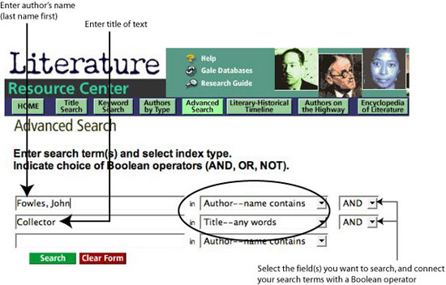

Find Reference Books
The following reference books, shelved in the Reference Room, provide biographical information and literary criticism.
- Contemporary Authors. biography ref Z 1224.C58
- Contemporary Novelists. ref PR 883.C64 2001
- Critical Survey of Long Fiction. ref PN 3451.C75 2000 Vol. 3
- Current Biography. biography ref CT 100.C8
- Masterplots II: British and Commonwealth Fiction Series. ref PN 44 .M37 1987
Find Books & E-Books
The Library's online catalog, Voyager, indexes books, e-books, pamphlets, and other material by subject, author, title, keyword, and call number. Sample searches are listed below.
| Fowles, John | [Subject search] |
| Fowles, John | [Author search] |
| Collector | [Title search] |
Since LBCC Library has a partnership agreement with CSULB, you may check out books from the University Library. To identify books, search CSULB's online catalog, called Coast, which is accessible over the Web at http://coast.csulb.edu.
Find Articles
The Library subscribes to a number of online databases, which are accessible over the World Wide Web from the Library's homepage.
Literature Resource Center
Contains biographical and critical information about thousands of authors and their writing. Information about literary movements, themes, and genres is also included. Gale Group Database. Password required.
Screenshot of sample search

ProQuest
Offers thousands of articles on a wide variety of topics. ProQuest provides access to approximately 1,500 scholarly and general-interest periodicals, many of them full-text, covering all major fields of study in the humanities, social sciences, and science and technology. Password required.
SIRS Renaissance
Provides information on music, literature, film, performing arts, culture, architecture, philosophy, religion, and visual arts. Password required.
Find Websites
Librarians' Internet Index http://lii.org
A subject directory of websites compiled and evaluated by librarians.
Internet Public Library http://www.ipl.org/ref/litcrit/
Online links to literary criticism
Literary Resources on the Net http://andromeda.rutgers.edu/~jlynch/Lit/
Links to sites dealing especially with English and American literature.
Cite Your Sources
Remember to list the sources used in your research in a bibliography or works-cited page following a documentation style, such as MLA (Modern Language Association). The most up-to-date guides for citing Web pages and other electronic sources in footnotes and bibliographies are on the Web, and they are accessible from the Library's homepage at http://lib.lbcc.edu. Click on "Internet Resources," then click on "Citation Guides."